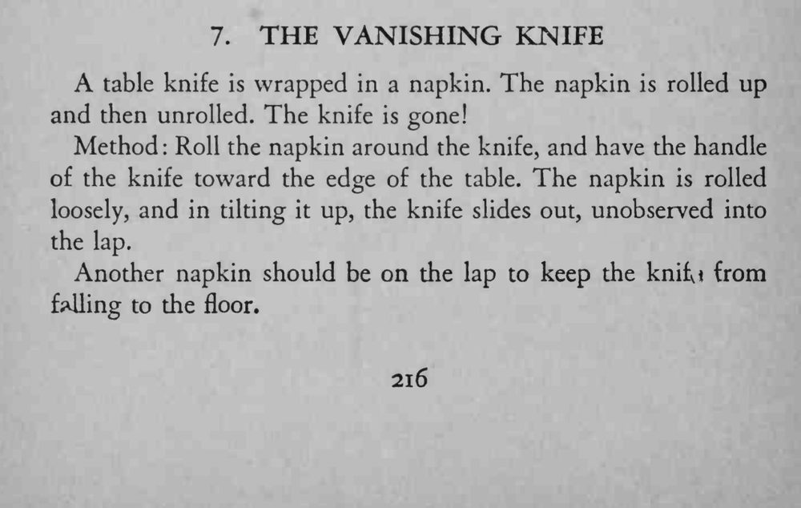

用一条餐巾把餐刀裹住，卷起再展开，餐刀已经不见了。
餐巾要卷得松、倾斜角度要小，腿上的第二条餐巾是消音的关键。

A table knife is wrapped in a napkin. The napkin is rolled up and then unrolled. The knife is gone! Method Roll the napkin around the knife, and have the handle of the knife toward the edge of the table. The napkin is rolled loosely, and in tilting it up, the knife slides out, unobserved into the lap. Another napkin should be on the lap to keep the knili from foiling to the floor.